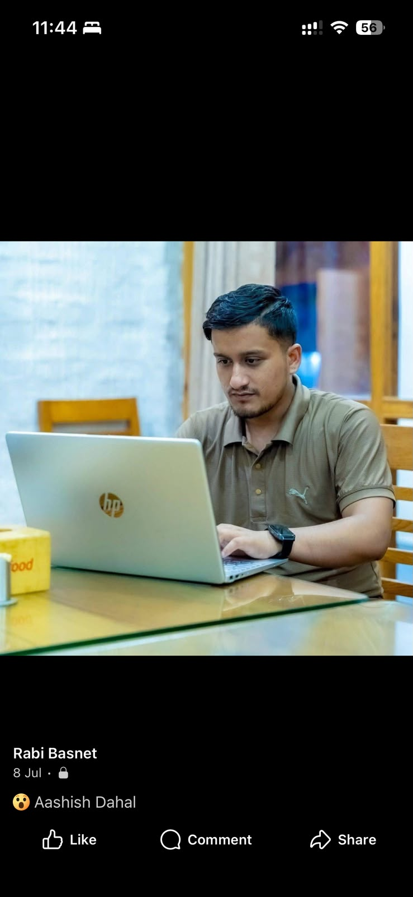

01
Infrastructure & Servers
Windows Server, Linux, Active Directory, DNS, DHCP, RAID, VMware ESXi, Hyper-V and data center operations.
I’m Rabi Basnet, an IT professional working across servers, networks, virtualization, ERP, Microsoft 365, Google Workspace, cloud operations and DevOps.

I work at the intersection of systems, cloud, enterprise applications and support—turning complex environments into dependable business operations.
My experience covers Windows and Linux administration, Active Directory, DNS/DHCP, Hyper-V and VMware ESXi, Microsoft 365, Google Workspace, NAV, Business Central, Odoo, networking, SQL administration, monitoring, backups and disaster recovery.
From the physical network to cloud collaboration and ERP, I work across the layers that keep an organization productive.
Windows Server, Linux, Active Directory, DNS, DHCP, RAID, VMware ESXi, Hyper-V and data center operations.
Microsoft 365, Google Workspace, email migration, user provisioning, licensing, AWS and DigitalOcean.
Support and administration for Microsoft Dynamics NAV, Business Central, Odoo ERP and HRMS.
LAN/WAN, VPN, Cisco switching, Sophos, FortiGate, wireless access and infrastructure security.
Docker, Kubernetes, Jenkins, Terraform, Git, PowerShell, Bash, Nginx, Zabbix, Grafana, Prometheus, backup and disaster recovery.
Progressing from Linux and system administration through DevOps and enterprise IT operations into infrastructure leadership.
Infrastructure operations across servers, virtualization, ERP, Microsoft 365 / Google Workspace, networking, SQL backup, Zabbix monitoring, procurement, vendors and IT reporting.
Managed organizational IT systems, Microsoft 365 administration, website operations, security, end-user support, procurement, CCTV and telephony.
Automated deployment pipelines for banking applications, Docker environments, CI/CD, Nginx, backup and production environment maintenance.
Linux administration, patching, firewall configuration, cPanel, DNS records, email accounts, monitoring, troubleshooting and vendor coordination.
Computer engineering foundations, cloud certifications and hands-on infrastructure work.
Nepal College of Information Technology (NCIT)
CGPA 3.47 • 2018–2023Certification
Certification
Academic achievement
NCIT, Lalitpur
Open to conversations around enterprise IT, infrastructure, cloud, ERP, system administration and technical operations.